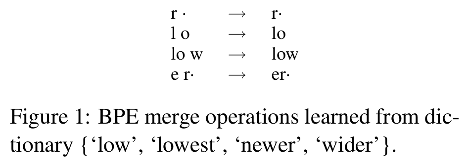
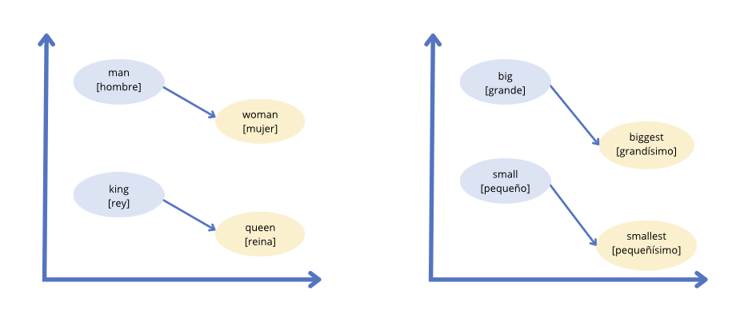
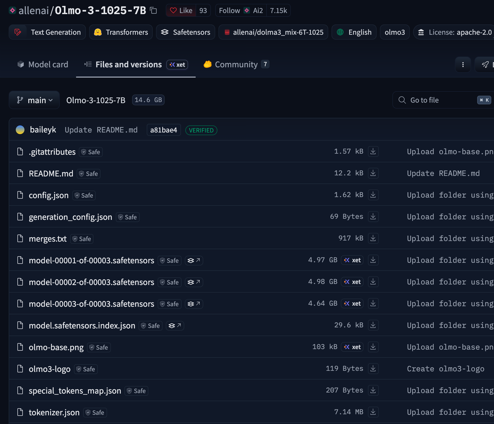
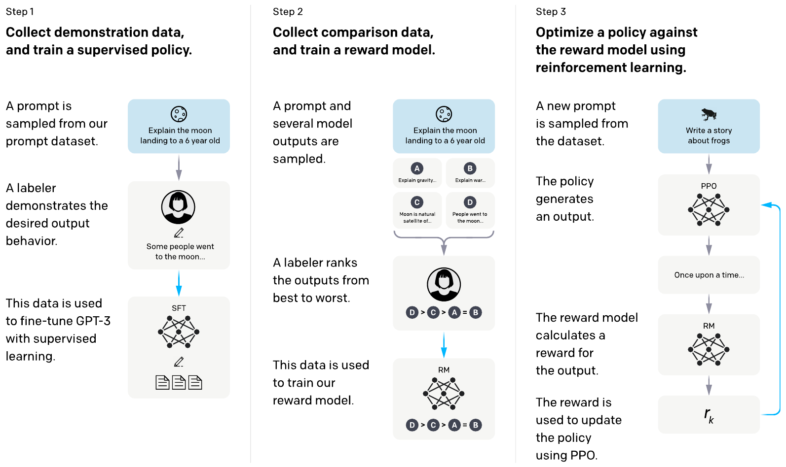

Aquí escribe el modelo, un token a la vezy para con<|eot_id|>128009
<|begin_of_text|>
Marca el inicio del texto.
En Llama 4 se llama igual.
<|start_header_id|>y<|end_header_id|>
Encierran el rol de cada mensaje.
En Llama 4: <|header_start|> y <|header_end|>.
<|eot_id|>
Cierra cada turno (end of turn). Cuando el modelo lo genera, termina su respuesta.
En Llama 4: <|eot|>.
Llama 3.1 tiene 128 000 tokens normales y reserva 256 números para los especiales. Llama 4: 200 000 y 2 048.
Tokenizer y plantilla oficiales de Llama 3.1 (Meta, 2024) y Llama 4 (Meta, 2025): repositorio meta-llama/llama-models. Cálculo propio con tiktoken 0.14.0. Consulta: 25 de noviembre de 2026.
Parte 1 · Tokens y tokenizer
El vocabulario es una lista fija
gpt2 · GPT-2 (2019)50 257
cl100k_base · GPT-4100 261
o200k_base · GPT-4o y GPT-5200 000
Un vocabulario más grande guarda más palabras enteras, también de otros idiomas.
Método. Tokens definidos en los archivos oficiales de tiktoken, con los especiales. Algunos números quedan sin usar: el más alto de o200k_base es el 200 018.
Fuente: tiktoken (OpenAI), archivos .tiktoken y model.py. Consulta: 23 de noviembre de 2026.
Parte 1 · Animación
Cómo se arma el vocabulario: BPE
Ejemplo: Sennrich, Haddow y Birch (2016), ACL, Algoritmo 1. La salida se calculó con su código: ejemplos/bpe_sennrich.py.
Consulta
La figura 1 del artículo de BPE

La figura usa otro diccionario: low, lowest, newer y wider.
Con esas uniones, una palabra nueva como «lower» se corta en «low» y «er·».
El punto marca el final de la palabra. En el código del artículo se escribe </w>.
Figura 1 de Sennrich, Haddow y Birch (2016), ACL, p. 1718. Licencia CC BY 4.0. aclanthology.org
Parte 1 · Por qué importa
El mismo texto gasta más tokens en español
Método. tiktoken 0.14.0, 23 de noviembre de 2026. El artículo se cuenta desde su primer párrafo. La traducción usa 20 % más palabras; por palabra, o200k_base cuenta 8 % más tokens y GPT-2, 60 % más.
Lee y Trott (2023), original en inglés y traducción autorizada al español (2024), Understanding AI. Conteo propio: ejemplos/tokens.py.
Parte 1 · Por qué importa
Por qué importan los tokens
Costo y ventana
El precio y la ventana de contexto se cuentan en tokens. El bloque 2.2 retoma el costo.
Cada modelo cuenta distinto
El tokenizer de Claude Haiku 5.5 produce cerca de un 30 % más tokens que el de Haiku 4.5.
Ve números, no letras
«tokenización» le llega al modelo como dos números:
token6602ización18856
Haiku 5.5: Anexo G.1 del curso y glosario de Anthropic (platform.claude.com). Tokens: o200k_base con tiktoken 0.14.0.
Parte 1 · Demostración en vivo
Pruébalo: escribe y mira los tokens
Tokenizer o200k_base en el navegador, sin internet: gpt-tokenizer 4.1.2 (licencia MIT), en copia local.
Parte 2 · De token a vector
De token a vector: buscar la fila
Pesos reales de GPT-2 pequeño (OpenAI, 2019), archivo model.safetensors en Hugging Face, licencia MIT. Datos: ejemplos/gpt2_pesos.py.
Parte 2 · Escena 3D
El espacio de los significados
Posiciones reales: vectores de GPT-2 pequeño reducidos de 768 a 3 dimensiones con PCA, que conserva el 39 % de la variación. Cálculo: ejemplos/gpt2_pesos.py.
Parte 2 · De token a vector
Las relaciones se vuelven direcciones

De «hombre» a «mujer» hay la misma dirección que de «rey» a «reina».
La lectura del club explica estas analogías. GPT-2 muestra la primera con datos reales.
Así un vector guarda parte del significado: los parecidos quedan cerca.
La atención: cada palabra pregunta y las demás responden
Frase y etiquetas por capa: Lee y Trott (2023), traducción autorizada al español. Programa propio en React.
Parte 3 · El transformer por dentro · 2 de 5
Muchas cabezas: varias maneras de mirar a la vez
Escala: Brown et al. (2020), tabla 2.1, y config.json de GPT-2 pequeño en Hugging Face. Patrones ilustrativos.
Parte 3 · El transformer por dentro · 3 de 5
El encoder: leer toda la frase para entenderla
BERT: Devlin et al. (2019), NAACL, sección 3. Licencia de ACL Anthology: CC BY 4.0. Intensidades ilustrativas.
Parte 3 · El transformer por dentro · 4 de 5
El decoder: escribir un token a la vez
Máscara y capas: archivo y config.json de GPT-2. GPT-3: Brown et al. (2020). Gemini: Gemini Team (2023). Claude: fichas de Anthropic.
Parte 3 · El transformer por dentro · 5 de 5
Encoder y decoder juntos: el transformer original
Figura 1: Vaswani et al. (2017), «Attention Is All You Need», arXiv v7. Reproducida con el permiso de Google para obras académicas.
Parte 4 · Los pesos del modelo
¿Dónde están los pesos?
Conteo propio de los pesos de GPT-2 pequeño, por pieza: ejemplos/gpt2_pesos.py. Los números que caen son pesos reales.
Parte 4 · Los pesos del modelo
Un LLM es tres cosas
El tokenizer
La lista fija de tokens y cómo cortar el texto.
tokenizer.json1.36 MB
La arquitectura
La receta: cuántas capas, cuántas cabezas y de qué tamaño son los vectores.
config.json665 bytes
Los pesos
Los números aprendidos en el entrenamiento.
model.safetensors548 MB
Así se ven las tres cosas en los archivos de GPT-2 pequeño en Hugging Face.
Tamaños de los archivos de openai-community/gpt2 en Hugging Face. Consulta: 23 de noviembre de 2026.
Parte 4 · Los pesos del modelo
¿Cuántos pesos tiene un modelo?
Escala logarítmica. Cada marca vale diez veces la anterior. Claude y Gemini no publican su número de parámetros.
GPT-2: conteo propio del archivo de pesos. Olmo 3 7B: Ai2, archivos en Hugging Face. GPT-3: Brown et al. (2020), tabla 2.1.
Consulta
Las cifras de los modelos de la hora
Modelo
Capas
Cabezas
Vector
Vocabulario
Parámetros
Tokens de entrenamiento
GPT-2 pequeño (2019)
12
12
768
50 257
124 439 808
no publicado
BERT-base (2019)
12
12
768
30 000
110 millones
no aplica a esta tabla
GPT-3 (2020)
96
96
12 288
no publicado
175 mil millones
300 mil millones
Olmo 3 7B (2025)
32
32
4 096
100 278
7 298 011 136
5.93 billones de pretraining
Fuentes: config.json de GPT-2 y conteo propio; Devlin et al. (2019); Brown et al. (2020), tabla 2.1; Ai2, config.json e informe técnico de Olmo 3. Consulta: 23 de noviembre de 2026.
Parte 4 · Los pesos del modelo
¿Cuánto pesa el archivo de los pesos?

Olmo 3 publica sus pesos: cualquiera los descarga. Claude y Gemini solo se usan por API.
Captura de la página de archivos de allenai/Olmo-3-1025-7B en Hugging Face, 23 de noviembre de 2026. Licencia del modelo: Apache 2.0.
Parte 4 · Los pesos del modelo
Cómo se aprenden los pesos: el pretraining
Ejemplo de Lee y Trott (2023). Tokens: Brown et al. (2020), tabla 2.1; informe técnico de Olmo 3 (Ai2, 2025), tabla 35.
Parte 4 · Los pesos del modelo
Después del entrenamiento, los pesos se congelan
El modelo no aprende de tu conversación. Lo retomamos en los límites del bloque 2.2 y en la memoria de la sesión 6.
Parte 4 · Los pesos del modelo
Del modelo base al asistente

InstructGPT de 1.3 mil millones de parámetros se prefirió a GPT-3, de 175 mil millones.
Figura 2 de Ouyang et al. (2022), «Training language models to follow instructions with human feedback», arXiv. Derechos reservados de sus autores.
Parte 5 · Cómo lo usas
Tres formas de usar un LLM
Aplicaciones de chat
Escribes en una ventana y lees la respuesta. Por ejemplo, Claude o Gemini.
La API
Tu programa le envía mensajes al modelo y recibe su respuesta. Así trabaja el curso.
Dentro de productos
El modelo viene integrado, como los asistentes de código en el editor.
Parte 5 · Cómo lo usas
Una llamada por API
from langchain.chat_models import init_chat_model
modelo = init_chat_model("anthropic:claude-haiku-5-5") # o "google_genai:gemini-2.5-flash-lite"
mensajes = [("system", "Respondes preguntas sobre Python en una frase."),
("user", "¿Qué versión de Python exige langchain 1.5.0?")]
respuesta = modelo.invoke(mensajes)
respuesta.usage_metadata # tokens de entrada y de salida
Parte 6 · La capa 1, parte 1
Tu proyecto crece por capas
1. El modeloHoy y en el bloque 2.2
2. Las instrucciones
3. El ciclo del agente
4. Las herramientas
5. El contexto
6. La orquestación
La ficha del agente
La sección 0 es la ficha inicial de la sesión 1.
Cada capa agrega una sección a la ficha.
Hoy empieza la sección 1: el modelo.
Parte 6 · La capa 1, parte 1
La capa 1, parte 1: diez casos
Diez casos de la tarea central, a partir de los cinco de tu ficha inicial.
Fáciles, difíciles y de borde. Cada uno con un resultado esperado que se pueda comprobar.
Tres casos de robustez: una entrada ambigua, una premisa falsa y una pregunta fuera de alcance.
Llévalos al bloque 2.2. La capa completa se entrega al inicio del bloque 3.1.
Parte 6 · La capa 1, parte 1
Un caso mal escrito y uno bien escrito
Mal escritoEntrada: un reporte de error. Resultado esperado: que lo clasifique bien.
Bien escritoEntrada: «La app se cierra al subir una foto en Android 15». Resultado esperado: categoría «fallo de la app» y prioridad alta.
Cierre
Lo que viste hoy
Un LLM es un tokenizer, una arquitectura y unos pesos congelados que predicen el siguiente token.
Después del club · 60 minutos en clase
Laboratorio 2A: capacidades y límites de un LLM
Practicas hacer preguntas a un LLM con LangChain y comparar cada respuesta con la esperada.
Configuras la lista de preguntas: hecho verificable, premisa falsa, fuera de alcance o posterior a la fecha de corte.
Mides los aciertos por tipo de pregunta, los tokens y el costo.
No escribes código a mano: lees, ejecutas y configuras.
Sin clave de API, el notebook usa respuestas grabadas. Con la clave del curso, corre en vivo.
El notebook trae sus pruebas de funcionamiento y de robustez.
¿Cómo sale tanto de predecir la siguiente palabra? Según los autores, un modelo aprende con una sola tarea: predecir la siguiente palabra. Aun así, escribe ensayos y hace analogías. ¿Cómo explicas ese salto? Si un agente decide sus acciones con este mecanismo, ¿qué te da confianza y qué no? Apóyate en la sección «Cómo se entrenan los modelos de lenguaje».
¿Por qué un modelo puede inventar un dato? Los autores distinguen lo que el modelo «recuerda» de su entrenamiento y lo que trae el prompt. ¿Por qué crees que un modelo puede inventar un dato con total seguridad? ¿Qué gana un agente cuando busca información y la pone en el prompt? Apóyate en la sección sobre las capas de atención y las capas feed-forward.
¿Qué le falta a un modelo que solo completa texto? El artículo explica el entrenamiento para predecir texto. En una nota, dice que ChatGPT pasó además por un ajuste con retroalimentación humana. Imagina que le pides «Resume este contrato» a un modelo que solo completa texto. ¿Qué crees que respondería? Apóyate en la nota 2 del artículo.